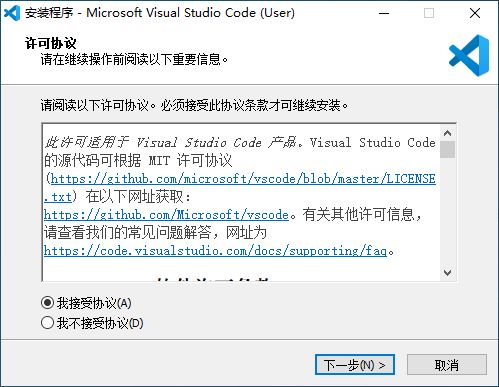

- 安装 Python3
- 官方网站：https://www.python.org
- 安装方法：
- 下载。请点击：https://www.python.org/ftp/python/3.7.6/python-3.7.6-amd64.exe
- 安装。双击刚下载得到的安装包，得到如图的安装指引,勾上添加到路径（Add Python 3.7 to PATH），然后选择自定义安装（Customize installation）
- 点击Next
- 点击Install（点击Browse可改变安装路径）
- 等待安装，出现如图，则安装成功
- 安装Visual Studio Code
- 官方网站：https://code.visualstudio.com
- 官方文档：https://code.visualstudio.com/docs
- 安装方法：
- 下载。请访问： https://code.visualstudio.com/Download
- 安装。双击刚下载得到的安装包，选择“我接受协议”，点击“下一步”
- 点击“下一步”。（点击“浏览”可改变安装路径）
- 点击“下一步”。
- 点击“下一步”。（勾选“创建桌面快捷方式”和“添加到PATH”）
- 点击“安装”。
- 点击“完成”，即可完成安装
- 配置Visual Studio Code
- 打开Visual Studio Code，点击Extensions,在搜索框输入“Chinese”,选择第一个，点击install，等待片刻，点击提示的restart即可，如图
- 同样地，搜索Python，选择第一个，点击install，等待片刻即可，如图
- 同样地，搜索Visual Studio IntelliCode ，选择第一个，点击install，等待片刻即可，如图
- 使用方法：
- 在任意位置，新建一个文件夹，然后将文件夹加入到Visual Studio Code（1.任意位置新建文件夹。2.文件 -- 打开 -- 选中文件夹 -- 确定）
- 新建文件（文件 -- 新建文件 -- 保存 -- 重命名（注意：必须以.py结尾）-- 选择保存路径 --存储）
- 实用技巧
- 运行程序（调试 -- 启动调试）（快捷键：F5）
点击Windows小蓝块即可下载，如图


！！！今日重点
- 安装 Python3
- 安装和配置 Visual Studio Code
- 新建文件夹并将文件夹加入到Visual Studio Code
- 新建python(后缀.py)文件，编程并运行程序，使控制台输出 Hello World，可参考下图